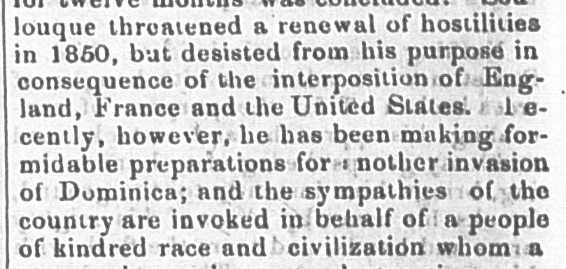
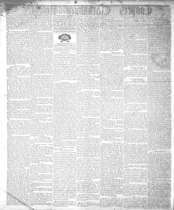

See the full pageVer la página completa1 e cently, however, he has been making formidable preparationsRecientemente, sin embargo, ha estado haciendo formidables preparativos
Based on the provided excerpt, the newspaper reported that after desisting in 1850 due to international interposition, an unspecified "savage despot" is making formidable preparations for another invasion of Dominica. The article argues that the United States must protect the Dominican Republic and defeat French annexation schemes, noting that France is allegedly intriguing for its conquest, interfering in its domestic affairs, and possibly holding the peninsula of Samaná. It further expresses approval that Mr. Douglas has introduced a matter to the Senate to inquire about recognizing Dominica's independence and opening diplomatic intercourse.Conforme al fragmento inserto, el rotativo denunció que, tras contenerse en 1850 merced a la mediación de las potencias, un «tirano despótico» promovía considerables aprestos bélicos con el propósito de consumar una nueva invasión contra la República Dominicana. El artículo exhortaba a Estados Unidos a tutelar a los dominicanos y desbaratar las ambiciones anexionistas de Francia, aseverando que ésta conspiraba para sojuzgar el país, se inmiscuía en su política interna y retenía potencialmente la península de Samaná. Aplaude además la iniciativa presentada en el Senado por el legislador Douglas para dilucidar el reconocimiento de la independencia dominicana y el establecimiento formal de relaciones diplomáticas.
FULL TEXT:TRADUCCIÓN:
for twelve months was concluded. Soulouque threatened a renewal of hostilities in 1850, but desisted from his purpose in consequence of the interposition of England, France and the United States. Recently, however, he has been making formidable preparations for another invasion of Dominica; and the sympathies of the country are invoked in behalf of a people of kindred race and civilization whom apor doce meses fue concluida. Soulouque amenazó con una renovación de las hostilidades en 1850, pero desistió de su propósito en consecuencia de la interposición de Inglaterra, Francia y los Estados Unidos. Recientemente, sin embargo, ha estado haciendo preparativos formidables para otra invasión de Dominica; y las simpatías del país son invocadas en favor de un pueblo de raza y civilización afines a quienes un
In this article, the newspaper calls the country 'Dominica.' It means the Dominican Republic, not the island of Dominica.En este artículo, el periódico llama al país «Dominica». Se refiere a la República Dominicana, no a la isla de Dominica.
Cooper'S Clarksburg Register. Clarksburg, Va. [W. Va.], June 7, 1854. Page 2.